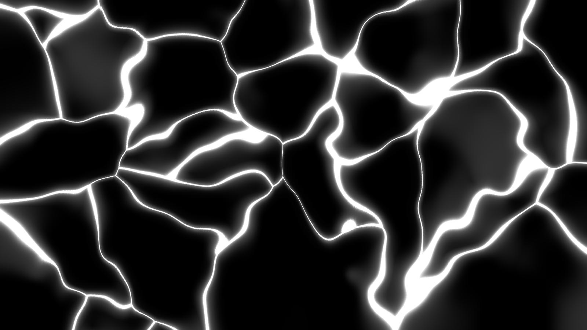
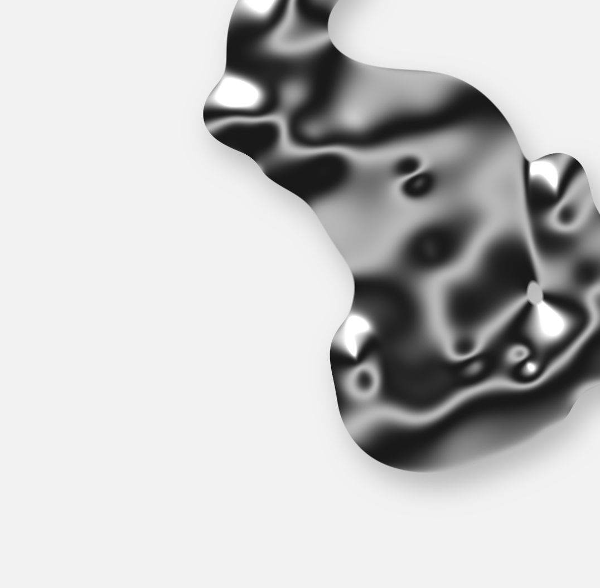
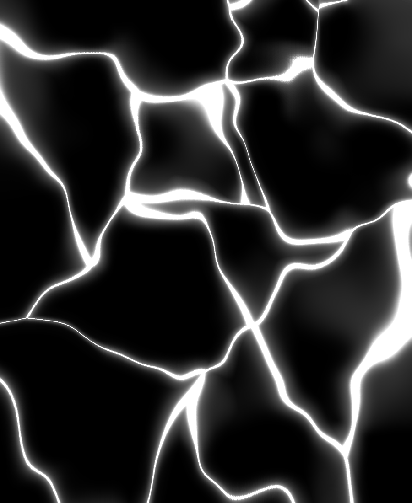
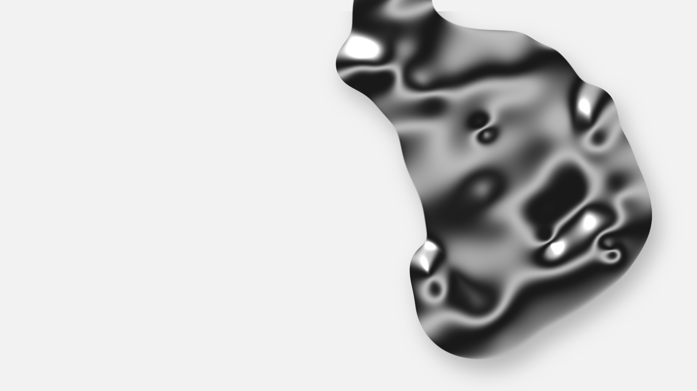

+
+
+
+
+
+
+
+
+
+
+
+
+
+
+
Aesthetics / Form / Life
有机生物
美学中的有机形态
[IDLE.OVER]
>> LOG ENTRY: 302
STASIS CYCLE COMPLETE.
HEARTBEAT: SLOW, BUT PRESENT.
MEMORY LOG: SPARSE.
>> "BEGIN AGAIN."
ORGANIC
01 — Definition
不是模仿
自然的样子,
而是模仿它
生长的方式。
有机形态(biomorphic form)借用生命体的曲线、薄膜、孔洞与骨骼节律,与几何、直角和机械秩序相对。它追求的是“生长感”,而不是写实。
BIOMORPHIC

Fig.01 — Liquid chrome, rendered
+
+
+
+
+
+
+
+
+
+
+
+
+
+
+
02 — History
从藤蔓到算法
1890s
新艺术运动
植物藤蔓与鞭形曲线
进入建筑和装饰
1920s
超现实主义
Arp、Miró 的生物形
让抽象有了流动的轮廓
1940s
现代有机设计
Eames、Noguchi、Saarinen
把曲面带进家具与雕塑
1990s
数字与参数化
算法生成与 3D 渲染
让液态、骨骼般的形体成立
03 — Vocabulary
四个视觉要素
01
CURVE
曲线
没有锐角,边缘连续,像被液体拉出来的一样。
02
VOID
孔洞
负空间与实体同等重要,镂空让形体显得轻。
03
MEMBRANE
薄膜
半透明与张力,光沿着边缘聚成一圈亮线。
04
SEGMENT
分节
肋骨、脊椎式的重复,节律中带一点不规则。

SKELETON
04 — Skeleton
骨骼
与节律
层层递进的肋骨,或一对被固化的蝶翼。重复带来秩序,逐渐变细的尺寸带来方向,略微失衡的细节让它像是活的。
节律 · 轻盈 · 脆弱

05 — Membrane
泡沫
与细胞
肥皂泡相遇的地方会自己形成网格,因为表面张力总在寻找最省力的形状。细胞、泡沫、蜻蜓翅脉,都遵循同类的规则。
边界 · 连接 · 脆弱的平衡

06 — Chrome
液态
金属
镜面材质在数字渲染里可以流动、融化、拉丝。冷的光泽配上生物形,机械与生命的界线因此变得模糊。
CHROME
反射 · 流动 · 非人的温度
+
+
+
+
+
+
+
+
+
+
+
+
+
+
+
07 — Takeaway
有机,
是一种
生长的逻辑。
>> Curve · Void · Membrane · Segment
>> "Begin again."